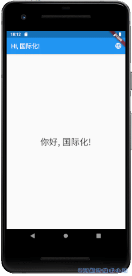
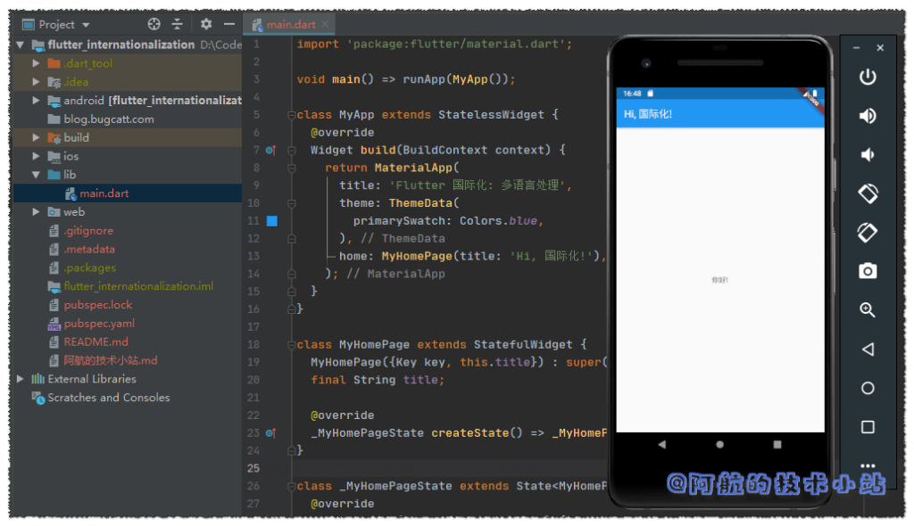
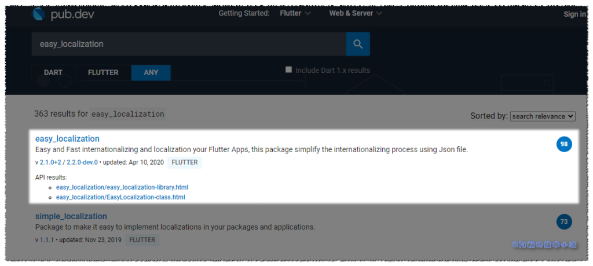
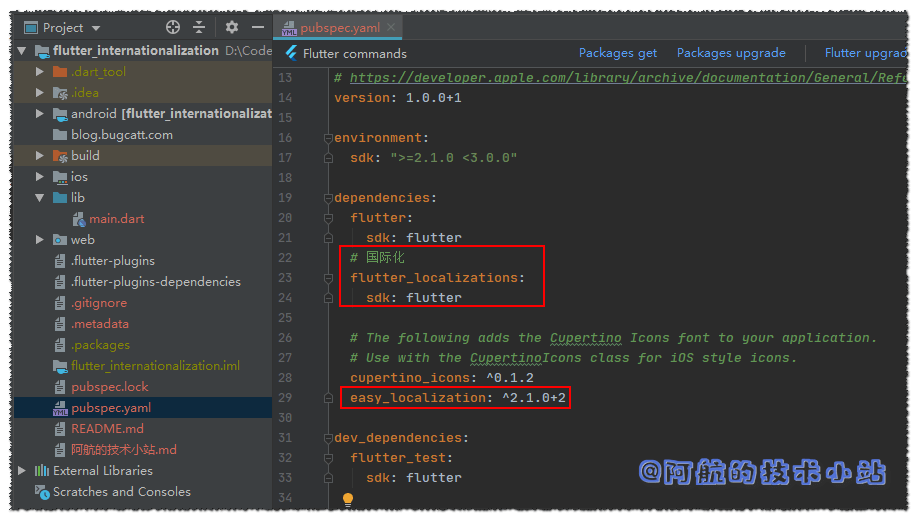
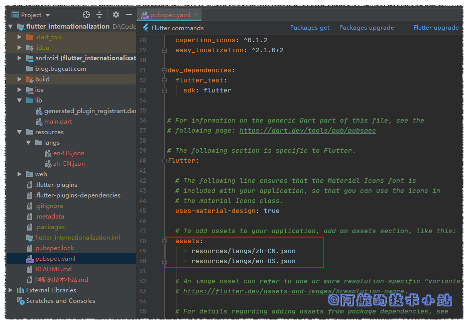
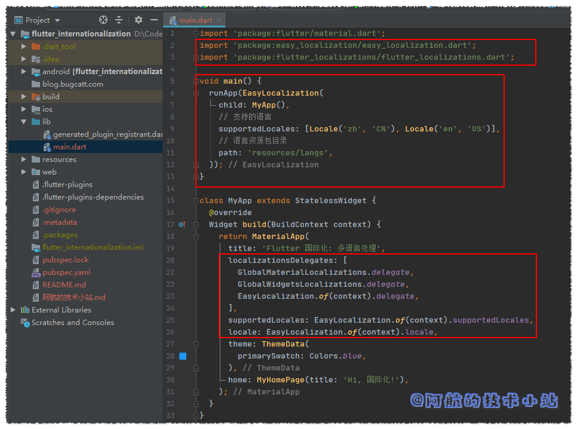
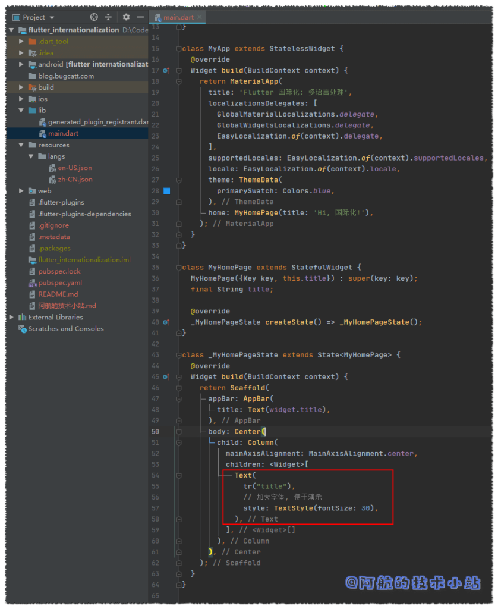
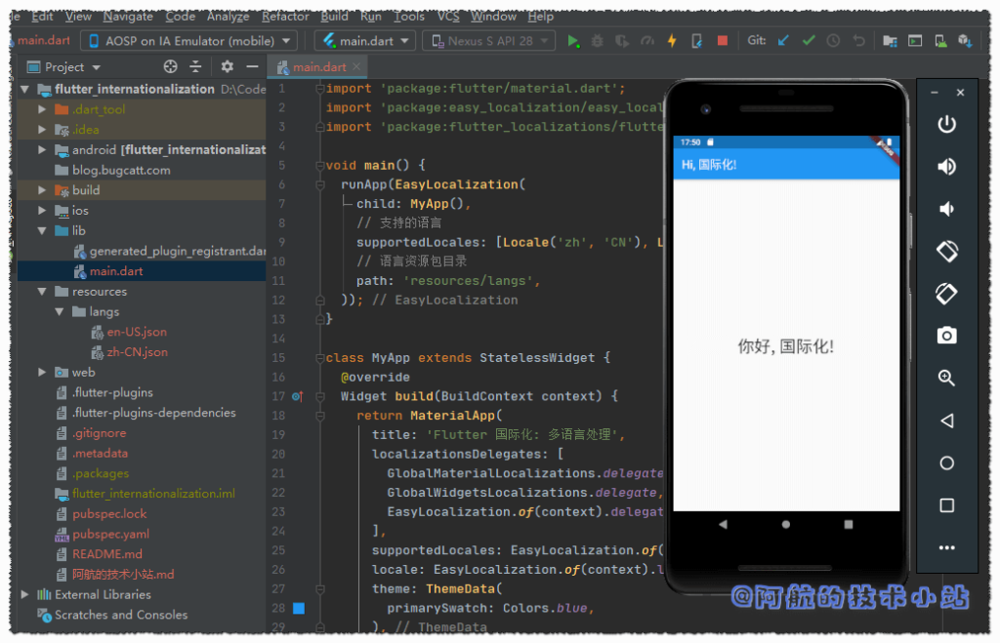

语言不互通是困扰了人类几千年的大难题🤐. 许多国外优秀的文学作品、 APP因为没有进行多国语言的处理, 导致发展缓慢甚至停滞. 虽然现在的各大翻译软件已经非常强大了. 但是想象一下: 一个用户一边拿着翻译机一边使用某个软件. 这样恐怕会逼疯用户, 可能会很快的放弃😭😭.
如果你的APP有相当一部分用户是来自全球各地, 那么对APP的国际化就是刚需💪.
对APP的国际化可以直线提升外国友人用户体验, 顺便会提高你的APP的"逼格", 用最简单的方式给用户一种"你们的APP很大很强"的感觉😏😏😏.
最终效果
老规矩, 有图有真相. 先来看看我们最终会实现的效果:

需求
在做一个事情之前, 我们先来简单的规划一下, 我们的目标是什么, 我们要怎么做:
- 提供多种语言处理, 对每部分文本进行单独的翻译.
- 用户可以随时切换语言
开始
第一步: 创建Flutter APP
这一步不再赘述, 相当基础的东西啦!
第二步: 清理项目
删除测试目录
删除./lib/test目录, 因为我们暂时用不上.
清理main.dart
因为新的Flutter项目中的main会给我们很多用不上的代码, 所以进行替换./lib/main.dart为:
import 'package:flutter/material.dart';
void main() => runApp(MyApp());
class MyApp extends StatelessWidget {
@override
Widget build(BuildContext context) {
return MaterialApp(
title: 'Flutter 国际化: 多语言处理',
theme: ThemeData(
primarySwatch: Colors.blue,
),
home: MyHomePage(title: 'Hi, 国际化!'),
);
}
}
class MyHomePage extends StatefulWidget {
MyHomePage({Key key, this.title}) : super(key: key);
final String title;
@override
_MyHomePageState createState() => _MyHomePageState();
}
class _MyHomePageState extends State {
@override
Widget build(BuildContext context) {
return Scaffold(
appBar: AppBar(
title: Text(widget.title),
),
body: Center(
child: Column(
mainAxisAlignment: MainAxisAlignment.center,
children: [
Text(
'你好!',
),
],
),
),
);
}
}
🟢 运行项目, 应该如图所示:

Easy localization
在pub仓库中寻觅了许久, 最终本篇博客选用了Easy localization 作为我们的国际化库.
先来看一下它在pub的评分:

嗯…高达98分. 在严格的pub评分下获得这样的分数🧐, 说明这个框架在各方面都相当优秀.
修改pubspec.yaml
为flutter加入国际化支持, 并引入我们上面说的第三方库easy_localization. 添加高亮的代码:
dependencies:
flutter:
sdk: flutter
# 国际化
flutter_localizations:
sdk: flutter
# The following adds the Cupertino Icons font to your application.
# Use with the CupertinoIcons class for iOS style icons.
cupertino_icons: ^0.1.2
easy_localization: ^2.1.0+2
代码截图:

别忘了要运行一下Packages get以更新依赖!
创建翻译文件
我们必须为翻译文件提供一个目录(文件夹). 比如:
/assets/langs
/assets/i18n
/assets/locale
/resources/langs
/resources/i18n
/resources/locale
...
我们来创建目录./resources/langs
文件的命名规则必须是:
目录/${语言码}-${国家码}.json
点击这里 查看所有的国家码
在里面创建两个json文件: zh-CN.json以及en-US.json. 两个文件将分别存储中文及英文的语言包.

为了让Flutter识别到这两个文件, 修改pubspec.yaml, 在下面添加资源文件:
flutter:
assets:
- resources/langs/zh-CN.json
- resources/langs/en-US.json
运行Packages get.
🟡 提示: 如果报错, 请检查格式、文件目录、文件名是否有误!

回到./lib/main.dart, 先导入:
import 'package:easy_localization/easy_localization.dart';
替换main()为:
void main() {
runApp(EasyLocalization(
child: MyApp(),
// 支持的语言
supportedLocales: [Locale('zh', 'CN'), Locale('en', 'US')],
// 语言资源包目录
path: 'resources/langs',
));
}
仍然在./lib/main.dart, 导入:
import 'package:flutter_localizations/flutter_localizations.dart';
在MyApp类的build函数的return中, title参数下方添加:
localizationsDelegates: [
GlobalMaterialLocalizations.delegate,
GlobalWidgetsLocalizations.delegate,
EasyLocalization.of(context).delegate,
],
supportedLocales: EasyLocalization.of(context).supportedLocales,
locale: EasyLocalization.of(context).locale,
这部分的代码截图:

我们已经准备好使用多语言了! 是不是很快? 我们来添加翻译条目:
修改zh-CN.json:
{
"title":"你好, 国际化!"
}
修改en-US.json:
{
"title":"Hello, internationalization!"
}
接下来就是使用了, 回到./lib/main.dart,
修改
Text(
'你好!',
),
为:
Text(
tr("title"),
// 加大字体, 便于演示
style: TextStyle(fontSize: 30),
),
代码截图:

💡 代码解析: 可能聪明的你已经猜到了:
tr()传入的字符串刚好对应我们的翻译文件的json. 我们在json中定义了title, 后面的翻译将会被tr()所返回.

接下来就是处理修改语言了.
在build()内定义函数:
/// 修改语言函数
void showChangeLanguageDialog(){
showDialog(context: context, builder: (BuildContext context){
return SimpleDialog(
title: Text("Language"),
children: [
SimpleDialogOption(
child: Text("中文"),
onPressed: (){
EasyLocalization.of(context).locale = Locale('zh', 'CN');
Navigator.pop(context);
},
),
SimpleDialogOption(
child: Text("English"),
onPressed: (){
EasyLocalization.of(context).locale = Locale('en', 'US');
Navigator.pop(context);
},
)
],
);
});
}
💡 代码解析: 这里使用了Flutter的
showDialog函数, 它可以弹出一个窗口并提供几个按钮供用户点击. 我们在其中有两个选项, 一个为中文, 一个为英文.通过变更
EasyLocalization.of(context).locale的值从而修改语言.修改语言后使用
Navigator.pop(context);来退出弹框.
我们还需定义一个按钮, 用来触发弹窗. 在Scaffold的AppBar中添加:
return Scaffold(
appBar: AppBar(
title: Text(widget.title),
actions: [
IconButton(icon: Icon(Icons.language), onPressed: ()=>showChangeLanguageDialog(),)
],
),
💡 代码解析: 在操作区添加一个
IconButton, 点击后触发上面定义的弹窗函数showChangeLanguageDialog
搞定!
🟢 运行项目, 效果应该是这样的:

感谢
- pub.dev 官方地址
- Easy Localization官方Github
- Pexels 上的 Pixabay 拍摄的照片